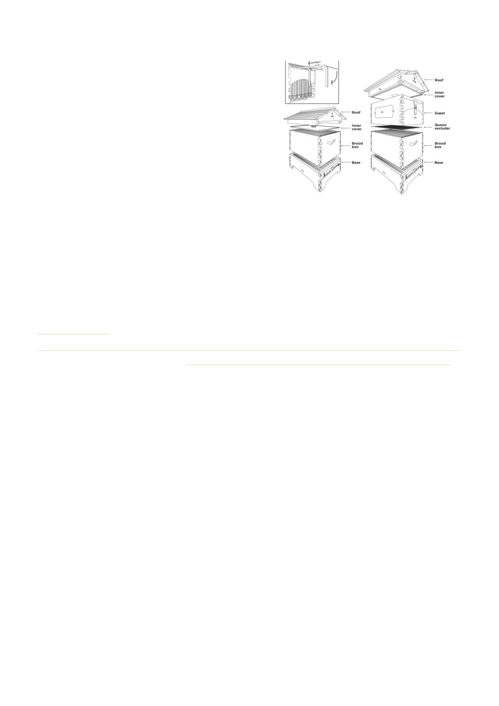

FLOW Hive
Flow hives are essentially a 'honey extraction system' and
are very similar to Langstroth hives as far as base and
brood box is concerned. The big difference is in the honey
boxes/super's and frames which are a unique design that
allows the honey to be extracted by turning a tap and
without the need of removing the frame from the hive.
To extract honey from traditional (Langstroth) hives, the
frames are removed from the hive and the wax covering
the honeycomb is cut/scraped off and then the honey is
spun or dripped out.
To extract the honey from a Flow hive, a lever is inserted into the honey frame to temporarily shift the
position of the plastic comb components allowing the honey to flow out a tube inserted at the bottom.
The advantage of this system is that the frames remain in the hive and there is minimum disruption to the
bees. There are however a few disadvantages to this approach as well. It can be difficult to see if the comb is
capped and the majority of the honey ready to extract. If the honey is thick or crystallised it will not flow out,
and the frames will need to be removed from the hive and heated to enable the honey to flow.
Flow hives are considerably more expensive than traditional Langstroth hives.
Source: the Geelong Beekeepers Club website, geelongbeekeepersclub.org.au › Resources › General Beekeeping › Hive components
Geelong Beekeepers Club ∙ General Beekeeping
15